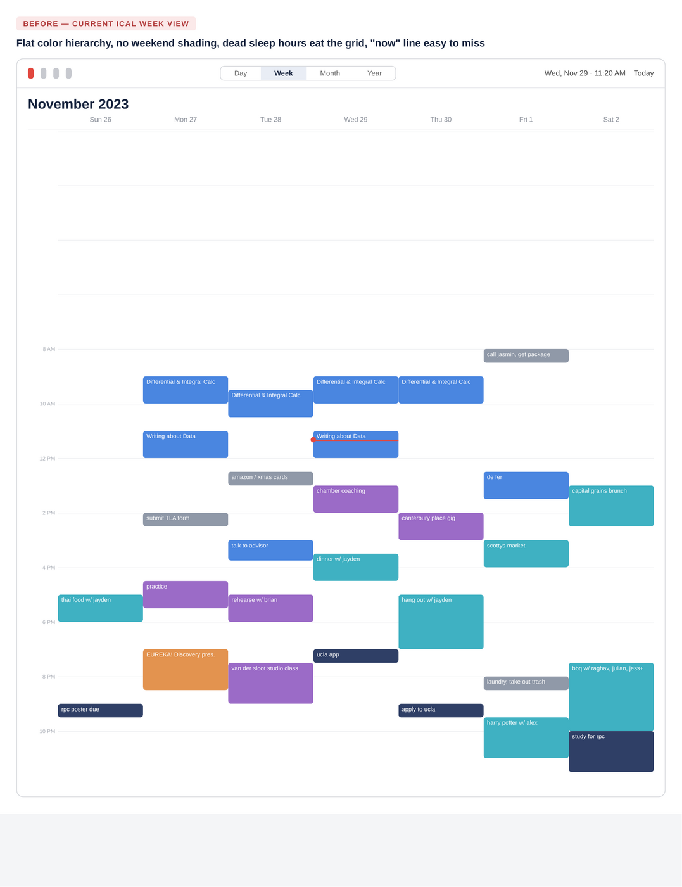
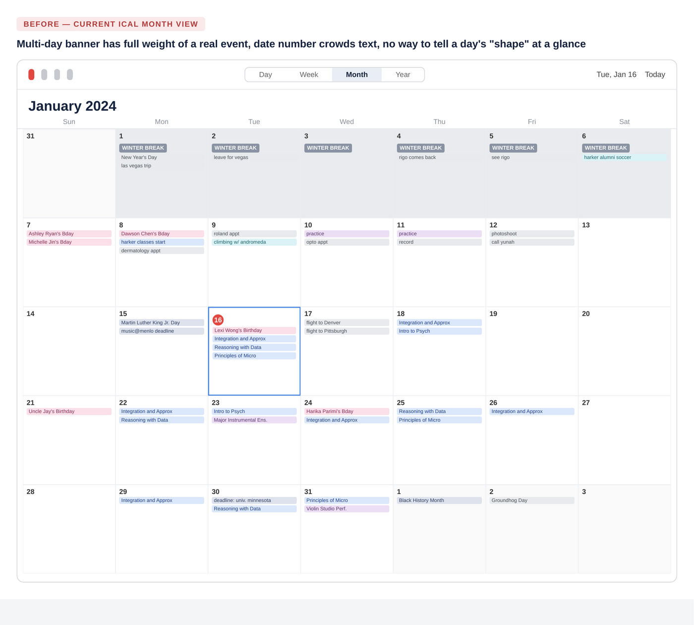
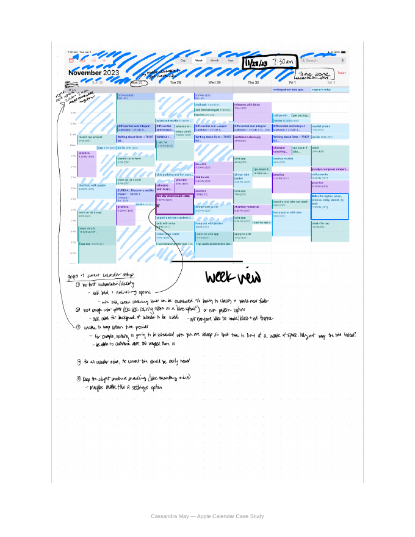
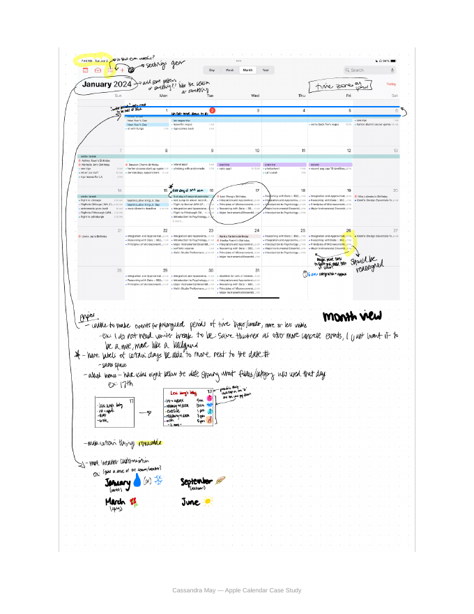
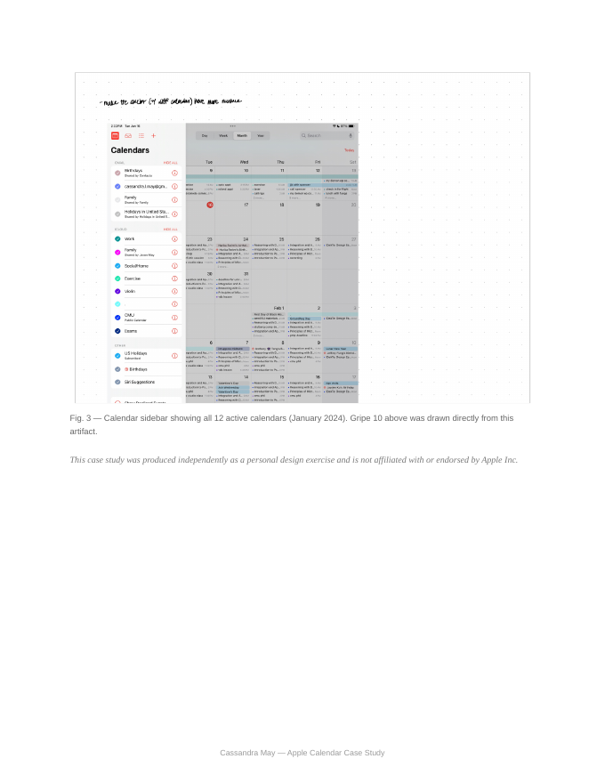

A diary study of my own scheduling friction — and what a redesigned week view, month view, and calendar sidebar could look like.
Apple Calendar's Week and Month views use a one-size-fits-all visual system that doesn't adapt to how differently people actually use their time. It leaves power users with dense, overlapping schedules unable to compress dead time, differentiate event importance, or scan a busy month at a glance.
As a busy student, my calendar is the only thing standing between me and a missed rehearsal, exam, or research deadline. In a given week I'm tracking five academic calendars, a research assistantship, orchestra rehearsals and performances, event-planning commitments, exercise, a social life... all on a simple calendar doing its very best.
Apple Calendar (iCal) is where all of it lives, and I like it. It works, but over a semester of near-constant use, the same friction kept resurfacing: dead space that couldn't be compressed, a color system too rigid to reflect how I actually organize my life, and views that gave a week-long school break the same visual weight as a 30-minute meeting.
Rather than switch tools, I treated my own calendar as a research subject.
I used an autoethnographic diary-study method: over several weeks of my use, I annotated live screenshots of my own calendar the moment something didn't work, using on-device markup to circle, label, and sketch fixes directly on top of my actual schedule.
Research artifacts:
Every event in a given calendar renders in the same flat color with no bold, italic, or pattern options. To make one deadline stand out from a routine event, the only option is creating an entirely new calendar — overkill for a single event.
Calendars support only a single solid preset color, with no gradients, patterns, or background tinting. The visual language defaults to a white/black/red theme that not every user wants.
Roughly seven hours every night (sleep) render at the same height as waking hours, pushing the real schedule below the fold in Week view for no reason — nothing is ever scheduled there.
Across every view type, the current-time marker blends into a dense grid of overlapping events and colors, making "what's happening right now" harder to answer at a glance than it should be.
Month view subtly shades weekends as a visual anchor; Week view doesn't carry the same treatment, removing a small but genuinely useful wayfinding cue.
A week-long banner like "Winter Break" renders at the same visual weight as a 9am lecture, cluttering the grid with context that isn't a "commitment" the way a scheduled meeting is.
Because the day-of-month number sits inline with the first event of the day, longer event labels get squeezed and truncated unnecessarily.
On a day with five or more events, there's no way to tell — without tapping in — what kind of day it is: exam-heavy, music-heavy, social. Every day cell looks equally dense.
The month grid looks identical whether it's a frozen January or a sunny June, which makes the calendar feel more clinical than it needs to.
Every calendar in the sidebar — Birthdays, Family, Social/Home, Exercise, Violin, CMU Public, Exams, US Holidays, Siri Suggestions, and more — is differentiated only by a small colored dot next to an identical list row. There's no iconography, no grouping, and no way to separate calendars I check daily from ones I rarely touch.
Turning the highest-priority findings into something you can actually click through, using the same real schedule from the diary study.

Click the toggles below to apply each fix to the real schedule from the diary study — same data, one change at a time.

Same idea for Month view — toggle each fix on and off.
Plotting the ten findings against rough implementation effort helps sequence a roadmap — small, high-leverage fixes first, with the more structural changes staged for later.
This was a solo, single-subject diary study — real, in-the-moment friction, but an n of 1. My own habits (heavy color-coding, 12 overlapping calendars, a packed academic schedule) shape which pain points surfaced; someone with a lighter calendar might prioritize differently.
With more time, I'd take this in three directions: run the same live-annotation exercise with 5–8 other students with different calendar habits to see which findings generalize beyond my own use; build clickable Figma prototypes for the "high impact / low effort" quadrant and usability-test them against the current iCal flows; and validate the category-icon-strip concept specifically — the most speculative finding here — with a first-click or card-sort test, since it changes the Month view's information density the most.
Raw, in-the-moment annotations made directly on live screenshots during actual weeks of use.



This case study was produced independently as a personal design exercise and is not affiliated with or endorsed by Apple Inc.